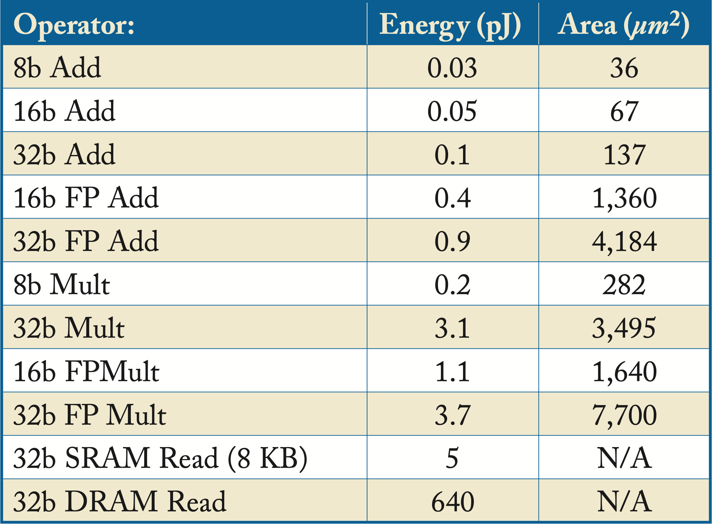

Chapter 7: Hardware
The primary components in a DL platform are multitudinous multiplication and addition units, sufficient memory capacity, high memory bandwidth to feed the compute units, high inter-node and inter-server bandwidth for distributed computing, and power to operate. The tradeoffs of architecting DL hardware depend on the targeted workloads and operating environment. The enormous design space includes numerical formats, memory hierarchies, power constraints, area constraints, software- or hardware-managed caches/scratchpads, support for dense and sparse computations, domain-specific to general-purpose compute ratios, compute-to-bandwidth ratios, inter-chip and inter-server interconnects, and ease of programmability.
The cost of arithmetic logic units (ALUs) is decreasing, and computational capacity is growing faster than memory bandwidth, as shown in Figure 7.1 for the top supercomputer. The primary hardware bottlenecks executing DL workloads are:
-
main memory bandwidth;
-
local (SRAM) memory; and
-
power (primarily from data movement).
Figure 7.1: Computational capacity is growing faster than memory bandwidth as measured by the capacity of the top supercomputer. Based on [LHL+18].
Moore's Law continues to deliver exponential growth in the number of transistors that can be packed into a given area, albeit at a slower rate than before. Computer architects are finding new ways to extract performance from this exponential growth. However, as a consequence of this exponential growth, compute and memory capacity are increasing much faster than memory bandwidth, which is the bottleneck in many DL workloads. The slow growth in bandwidth relative to compute is known as the memory wall or bandwidth wall, where compute units are idled waiting for data [WM95; RKB+09].
As transistors shrink, their power density no longer stays constant but rather increases, which is known as the end of Dennard's scaling (discussed in Section 7.1) [DGY+74]. The amount of dark silicon, where transistors cannot operate at the nominal voltage, is increasing. This dark silicon motivates the exploitation of transistors for multicore processors and domain-specific circuitry. Some of the existing techniques to increase performance are (detailed in Section 7.4):
-
using a memory hierarchy to facilitate data-reuse;
-
increasing the memory bandwidth;
-
placing the memory close to the compute units to reduce access time and energy;
-
applying a single instruction to multiple data;
-
reducing the numerical representation and compressing the data; and
-
using specialized logic or dedicated accelerators.
Each innovation is a one-time card; that is, each innovation gives a performance boost once since these innovations do not resolve Dennard's scaling. From a clock-speed perspective, devices are not getting any faster.
In order of decreasing access time and increasing die area, the storage types are: nonvolatile memory (flash memory, magnetic disk), DRAM (HBM2/E, GDDR6, DDR4, LPDDR4/5), SRAM (scratchpad, cache), and registers, all discussed in Section 7.2. DRAM is often called main memory and SRAM local memory.
Table 7.1 compares the energy for various operators, including data fetching, in a von Neumann architecture. DRAM access can cost two orders of magnitude more power and processing cycles over local SRAM. It is crucial to minimize DRAM accesses to improve performance and reduce power consumption.
Table 7.1: Required energy and silicon area for various operator units in a 45 nm technology node. Adopted from Hor14 and Dal17. 
A smaller numerical representation compute unit requires less area and energy; thus, more units can be added to a given die. The amount of area needed for floating-point multipliers grows quadratically with the number of mantissa bits and linearly with the number of exponent bits.
In Section 1.8, we introduced (1) the high-level requirements for the different DL usages: hardware design, topology design, training in production, serving in data centers, and serving in edge devices; and (2) the important hardware features and MAC combinations for training and serving production hardware. Training requires storing and retrieving the activations across all the layers, which typically involves reading and writing several GB of data (the activations) from and to DRAM. In training CNNs, the size of the activations typically has a more significant impact on the total memory requirements than the size of the model. To illustrate, U-Net (used for medical 3D image classification) has \(20\) million weights but requires \(256\) GB of memory. Conversely, Megatron-LM-1.2B has \(1.2\) billion weights but requires \(32\) GB of memory. Given the amount of data transfer, using a high bandwidth DRAM, such as HBM2E, for training tasks is beneficial. An advantageous design choice is to put enough SRAM to store the model and the activations associated with two consecutive layers in training and inference. Note that the size of the activations is proportional to the batch size, which is usually small for inference.
As much as possible, data center managers want a homogeneous and manageable data center leveraging specialized accelerators only when absolutely needed. However, given the exponential demand for compute and the end of Dennard's scaling, the demand for dedicated DL processors is increasing. Hardware designers should be aware of what hyperscalers value:
-
performance per power and per cost;
-
minimal transition work from an existing to a new hardware/software system;
-
programmability and ease-of-use; and
-
high utilization (the device does not sit idle frequently).
Flexibility is a crucial consideration when designing DL hardware, in particular, because the design is mostly locked around two to three years before the product is deployed, which is a challenge in this rapidly evolving field. Recent algorithmic advancements include depthwise separable convolution, dilated convolutions, residual connections, ReLU variants, and GNNs. New models have irregular memory access patterns, more complex control-flow, and dynamic computation graphs that vary with different input data and cannot be optimized at compile time. These models can benefit from higher general-purpose compute. Models with predictable access patterns and primarily dense linear algebra benefit from dedicated matrix multipliers. Note that the required compute and bandwidth can significantly vary for different workloads, as shown in Figure 1.16.
The following are important hardware features for training and serving hardware for production workloads in data centers. Software is equally important and discussed in Chapters 8 and 9. The hardware characteristics for training are:
-
masses of \(bf16 \rightarrow fp32\), \(fp16 \rightarrow fp32\), and sufficient \(fp32 \rightarrow fp32\) MACs;
-
high in-die interconnect (IDI) bandwidth for multicore GEMMs and broadcast/reduce collectives;
-
sufficiently large SRAM for the weights and some activations;
-
high DRAM bandwidth to store and read the activations, or alternatively, a much larger SRAM capacity;
-
high intra-server inter-node bandwidth for (1) multinode GEMM, (2) broadcast/reduce collectives in large embedding layers, and (3) distributed training across nodes (on servers without accelerators, a node can be a socket or a group of cores); and
-
high inter-server bandwidth for distributed training.
For serving:
-
plenty of \(fp16 \rightarrow fp32\), \(bf16 \rightarrow fp32\), \(\mathit{int}8 \rightarrow \mathit{int}32\), \(fp8 \rightarrow fp32\) and some \(fp32 \rightarrow fp32\) MACs;
-
high IDI bandwidth for multicore communication for GEMMs and broadcast/reduce collectives;
-
sufficiently large SRAM for the weights and some activations; and
-
video decoder for media analytic workloads (inference on video frames).
Established hardware companies and several startups have developed or are developing specialized processors and platforms with CPUs, GPUs, FPGAs, CGRAs, DSPs, ASICs, and a mixture of them. The number of DL processors is likely to expand over the next few years and later consolidate. Most of the processors are not going to succeed in the market for two reasons. First, multiple highly specialized processors result in limited volume for each processor, which limits the economies of scale and may limit access to the most advanced fabrication processes. The market demand is further limited as some hyperscalers requiring a large volume of processors have built or are building their own. Second, DL engineers are unlikely to learn multiple programming paradigms. The companies that succeed are likely those that delivered a cost-effective programmable and balanced platform with some flexibility to adjust for different requirements, such as the general to domain-specific compute ratio.
In the remainder of this chapter, we review the basic concepts of computer architecture and hardware designs, discuss the various types of memories, and explain workload roofline analysis. Lastly, we compare various DL processors and platforms and their strengths and weaknesses.
7.1 Moore, Dennard, and Amdahl
Demand for more compute, memory, and bandwidth is growing at a time when exponential compute growth is slowing down. In this section, we review the reasons for this slowing down and the ways hardware vendors are partially mitigating this.
At the heart of compute and memory is silicon-made transistor gates. Transistor gates form logic gates, such as the AND, OR, and NOT, which in turn form more complex logic. Transistor gates open and close to block (insulate) or let (conduct) electrical current through by charging or discharging the gate capacitance using voltage. The capacitance is related to the length and width of the transistors. On the one hand, the smaller the capacitance, the less voltage the transistor needs, and the faster it can operate. On the other hand, the less voltage, the less tight the gate closes, and the more current it leaks. Also, as transistors get smaller, both the length of the channel (the region between the source and drain under the gate) and the insulation layers are reduced, which increases the electron tunneling between the source and drain. This tunneling results in current leakage and, as discussed below, is the primary reason for the slowdown in computational growth.
Gordon Moore predicted in 1975 that for the next several years the number of transistors that fit in the same chip area would double every two years (revising his 1965 prediction of doubling per year) through improved technology and innovative techniques [Moo75; Moo65]. This observation is known as Moore's Law and as held for several decades. Today, the exponential growth continues, albeit with a longer than two-year cadence. The primary benefits are less expensive processors, more powerful processors with more transistors and logic per area, or both.
Robert Dennard et al. demonstrated that as transistors shrink, their power density stays approximately constant [DGY+74]. This is known as Dennard's scaling. Combined with Moore's Law, every two years and under the same power budget, the number of transistors per area doubled and operated at \(40\%\) higher frequencies (details below). Dennard's scaling broke down in the mid-2000s due to current leaking.
The total consumed power (in Watts or Joules per second) is the sum of the dynamic (or switching) power and the static (or leakage) power. Dennard scaling only accounts for the dynamic power, which is defined as follows:
where \(E=\frac{1}{2}\cdot C\cdot V^2\) is the energy (in Joules) to open or close a transistor gate, \(Q\) is the number of active transistors (here we assume all transistors are active), \(C\) is the capacitance, \(V\) is the voltage, and \(f\) is the frequency. Scaling down the transistor dimensions by \(\kappa>1\), scales down the area by \(\kappa^2\), and scales down the capacitance, charge/discharge time (inverse of frequency), and voltage by \(\kappa\). The number of active transistors under the same area is \(\kappa^2\), and the dynamic power remains constant:
To illustrate, if the transistor dimensions scale by \(\kappa = \sqrt{2}\approx 1.4\) (per Moore's prediction), then under the same dynamic power and area, the number of transistors doubles and the frequency increases by 40%.
The static power is:
where \(I_{\mathit{leakage}}\) is the current leakage. Dennard's scaling ended in the mid-2000s due to the increases in static power. Today, reducing the voltage in smaller transistors increases current leakage and increases the power density. Instead of having more clock cycles per second (higher frequency), the focus today is on increasing the instructions per cycle (IPC) or operations per cycle; that is, doing more work per cycle.
Decreasing the voltage increases the static power exponentially. Increasing the voltage increases the dynamic power exponentially, as shown in Figure 7.2. There is an ideal voltage that minimizes the sum of the static and dynamic power.
Figure 7.2: Total power requirement (red curve) across various voltages. Low voltage results in high static power due to current leakage. High voltage results in high dynamic power. There is an optimal voltage \(V^{*}\) where the total power usage is minimized.
The propagation time \(T_{\mathit{prop}}\) of the current through all the logic gates in its path needs to be less than \(1\) clock cycle. As the frequency increases past some \(f_{\min}\), higher voltage is required to operate the transistor gates more rapidly. This increase in voltage is approximately linearly proportional to the increase in frequency, as shown in Figure 7.3. The voltage to operate at \(f_{\min}\) is \(V_{\min}\). Increasing the frequency past \(f_{\min}\) increases the power to the cube of the frequency increase: \(\Delta P\propto (\Delta V)^2 \Delta f \propto (\Delta f)^3\).
 Figure 7.3: Increasing the frequency past \(f_{\min}\) linearly increases the required voltage, and (not shown) cubically increases the dynamic power.
Figure 7.3: Increasing the frequency past \(f_{\min}\) linearly increases the required voltage, and (not shown) cubically increases the dynamic power.
Power generates heat, and too much heat can damage the circuits. There is a maximum power that a system can operate without damaging the circuitry, and this limits the maximum frequency. In fact, over the past decade, the maximum frequency of high-end server processors has not changed much. Servers continue to operate in the \(2\)-\(4\) GHz range. Another reason to cap the maximum frequency is related to the maximum distance the electrical current travels in the circuitry. The time it takes to travel this distance must be less than one clock tick, which can be an issue for large circuits when operating at high frequencies.
The primary contributors to the increased dark silicon are the exponential growth in transistors per area, current leakage, and power constraints. Multicore processors and specialized computing are two methods to mitigate dark silicon. These methods have enable the continued growth in computational capacity at the expense of two new challenges: Amdahl's law and the memory wall.
Gene Amdahl formalized the speedup when only a fraction of a program is improved, known as Amdahl's law. It is used to determine the limitations of parallel computing [Amd67]. Using \(N>1\) cores for a particular workload results in a maximum speed up of
where \(P\) is the percentage of the workload that is parallelizable. Approaching this maximum speed up requires nontrivial parallel programming, and there is a computer science field dedicated to this. Even assuming \(P=1\), perfect linear scaling across general-purpose multicores is not possible. There are core-to-core bandwidth limitations and cache coherence overhead, which grows with more cores.
These limitations and overheads are motivations to reduce the scope of hardware-based cache coherence and to use domain-specific DL processors for embarrassingly parallel (minimal communication/synchronization between parallel elements) workloads with predictable operations. Solutions still require a way to operate on the right data, and this drives a combination of application-specific hardware and software-based "coherence" [AVG+15; TKT+16; ADC11].
Figure 7.4 provides a high-level view of the trends in microprocessors. The number of transistors per area continues to grow exponentially, and the number of logical cores is following that same growth path; new transistors are primarily used for additional cores. In the future, the growth in the number of cores may slow down, and more transistors utilized for domain-specific acceleration. While frequency has already plateaued, single-thread performance continues to increase due to better instruction pipeline, improved branch prediction, out-of-order execution, larger instruction vectors, and specialized execution units, resulting in more IPC.
Figure 7.4: Trends in microprocessors. Source: [Rup20] (CC BY-SA 4.0 license).
7.2 Memory and Bandwidth
The growth in memory bandwidth has been significantly slower than the growth in computational capacity. The time to read data from memory is often the main hindrance to performance. Moreover, given current trends, this divide between the compute (OPS) and the data transfer (bytes per second) is increasing, which can result in unutilized compute capacity. As an example, the Nvidia T4 card supports up to \(130\) \(\mathit{int8}\) TeraOPS (TOPS) with \(320\) GB/s bandwidth [Nvi20b]. To keep full utilization, the T4 processor must perform an average of \(406\) operations on every read byte. One way to reduce exposure to the memory bandwidth is to use a cache memory hierarchy that stores frequently or immediately accessed elements closer to the compute element. The efficiency of caches is dependent on the working set having spatial or temporal locality that can exploit these hierarchies. There is a rich literature on arranging matrices, known as blocking and caching, to fit various memory caches and achieve high data reuse [Gvd08; CWV+14; GAB+18; ZRW+18].
Memory can be described by its capacity (bytes) and data transfer rate or bandwidth (bytes per second). The bandwidth (BW) can be computed as follows:
where \(f_{\mathit{mem}}\) is the memory frequency, the interfaces are typically \(2\) (dual-channel configuration) in modern processors, and the transfers per clock are \(2\) for memories that transfer on both the rising and falling clock edge (such as DDR) and \(1\) otherwise. In practice, the effective transfers per clock may be slightly lower and workload-dependent; in DRAM, it depends on the distribution of read and write transactions.
The memory types used in production in increasing order of accessed time and, equivalently, in increasing order of memory density (bytes per silicon area) and decreasing monetary cost per byte are as follows:
-
processor registers;
-
SRAM: scratchpad, cache (typically with multiple levels); and
-
DRAM: HBM2/E, GDDR6, DDR4/5, LPDDR4/5.
There are two types of random-access memory: dynamic RAM (DRAM) and static RAM (SRAM). SRAM uses a bistable circuit design that is faster but more expensive and requires four to six transistors per bit. DRAM is slower but less expensive and requires only one transistor (and a capacitor) per bit, and hence it has higher memory density. The capacitor stores the charge (the bit). Reading the stored bit consumes this charge requiring a write after the read cycle to save the value. Even in the absence of read/write activity, DRAM memory must be frequently refreshed to avoid losing information as the charge leaks (at a temperature and device-dependent rate). This refresh involves reading the data and immediately writing it to the same area (as DRAM reads are destructive). SRAM does not require frequent reads and writes. Both DRAM and SRAM are volatile memories; that is, they lose the stored bits when the power is off.
There are two main types of SRAM configurations: caches and scratchpads [LAS+07]. A cache is implicitly addressed (not directly addressed by the software), hardware-managed memory. A scratchpad (also called streaming memory) is explicitly addressed, software-managed memory. Caches are common in CPUs and GPUs to support general-purpose workloads. Scratchpads are common in embedded and dedicated hardware, such as ASICs and DSPs, for static graph-based workloads to reduce power consumption.
A cache has additional logic circuitry to ensure cache coherence and improve locality to determine what data to keep (this data is known as hot entries or working set) and what data to replace. This logic alleviates the software (the programmer or compiler) from directly managing the cache memory access. However, it comes at the expense of higher energy cost per data access and lower memory density. This additional logic is beneficial for irregular access patterns, such as in GNNs, embedding layers, and DL dynamic graph-based models.
There can be different levels of caches. Modern CPUs have three-levels of caches: \(L1\), \(L2\) (mid-level cache (MLC)), and \(L3\) (last-level cache (LLC)). \(L1\) is the smallest and closest memory to the compute unit, and therefore has the fastest access time. CPU processors have two different \(L1\) caches: a data cache unit (DCU or \(L1d\)) and an instruction cache unit (ICU or \(L1i\)). Data and instructions share the cache in \(L2\) and \(L3\). Modern GPUs have \(2\) levels of cache. The canonical chunk (block) of memory loaded from the main memory to the cache hierarchy is called a cache line. Note that loading an entire cache line can waste bandwidth and storage on sparsely strided memory accesses.
Different architectures use different cache replacement policy algorithms, and even different cache levels within an architecture may use different policies. While the specific policy used by a microarchitecture is not always made public, variants of the Least Recently Used (LRU) eviction policy are common, such as Adaptive Replacement Cache (ARC). LRU means the cache tracks and evicts the least recently accessed page when adding a new page. ARC tracks frequently used, recently used, and recently evicted pages.
While caches are hardware-managed, there is some work to enhance cache control with software hints. One example is using the CLDEMOTE instruction, which hints to the hardware to demote a given cache line to more distant cache from the processor to speed up access to the cache line by other cores (L1 caches are unique to a specific core).
A scratchpad has a simple memory structure that provides better efficiency at the expense of sophisticated software; it manages all the memory accesses and the replacement policy. A scratchpad is typically more efficient than a cache, usually \(1\)-\(2\) clock cycles per memory access. A scratchpad has addressable storage and requires explicit software-controlled direct memory access (DMA) transfers to orchestrate all data movement in the proper order. However, any mismatch of memory accesses to the ALU or FPU logic inputs or outputs may lead to orders of magnitude of performance degradation. Thus, scratchpads are typically limited to DL workloads with static graphs, where all data accesses are predictable and determined at compile-time. In high-volume production, saving some power and execution time has multiplicative benefits over the lifetime of the model, which may outweigh the software complexity costs.
A hybrid memory system uses both cache and scratchpad configurations. Nvidia architectures (excluding Pascal) configure some cache memory as a scratchpad for application-specific locality and communication optimizations. Note that Nvidia refers to scratchpad and cache as shared and automatic memory, respectively. There is research toward a unified configuration to get the best of both, such as Stash and Buffets [KSA+15; PSC+19].
There are three types of caches with different speeds and conflicts tradeoffs. Cache conflicts occur when a different cache line from memory maps to the same cache entry, thus evicting and replacing the existing cache entry. The placement depends on the memory address.
-
Fully Associative places a cache line from memory in any entry in the cache; this has the slowest-access time but minimizes conflicts.
-
Direct Mapped places a cache line from memory in a specific entry in the cache; this has the fastest-access time but maximizes conflicts.
-
\(N\)-way Set-Associative places a cache line from memory in any of \(N\) entries in the cache; this provides a compromise between access time and conflicts.
In practice, most CPU caches in production are \(N\)-way set-associative caches. Understanding cache associativity can guide the design of the DL topology. To illustrate, an \(fp32\) GEMM with a leading dimension of \(1024\) (used in an RNN layer with \(1024\) units), results in high cache conflicts in CPUs; a better leading dimension is \(1040\) in modern CPUs, as explained in Section 7.2.1.
DRAM or, more precisely today, Synchronous DRAM, is less expensive in price and silicon area but is significantly more expensive in energy and access time compared to SRAM. There are various types of DRAM used in production: Double Data Rate (DDR), High-Bandwidth Memory (HBM), Graphics DDR (GDDR), and Low-power DDR (LPDDR), and various generations within each type [GLH+19]. DDR memories fetch the data on both the leading and falling edge of the clock signal. Other types of DRAM with minimal market adoption are Hybrid Memory Cube (HMC) and Wide I/O (WIO).
DDR
DDR4 is the most widely used DRAM. It is available in servers, workstations, laptops, and some inference accelerators, such as Habana Goya. Increasing the number of main memory channels improves bandwidth and partially mitigates the memory wall [Hor14; PRH+17]. However, the maximum number of balls or pins possible on a package limits the number of channels. DDR5 is the latest generation of DDR providing higher bandwidth and density. Intel processors codenamed Sapphire Rapids and (likely) AMD processors codename Genoa should support DDR5.
HBM
HBM2 is the defacto DRAM memory for GPUs and accelerators targeting training, HPC, and cryptomining. It is available in the Nvidia {P, V, A}100 GPUs and Habana Gaudi. Google TPU v2 and v3 (and likely v4) use HBM but have not made public the specific HBM generation.
HBM2 has a \(1024\)-bit wide interface across \(8\) channels per stack, and (in the latest specification) \({\sim} 2.4\) GT/s transfer rates (each bus lane transfers \({\sim} 2.4\) Gbps), for a total of \(307\) GB/s per DRAM stack or package. It provides higher bandwidth and uses less power relative to other DRAM memories. HBM memory connects to the processor via a purpose-built silicon chip called an interposer and mounts in the package substrate, as illustrated in Figure 7.5. The shorter wires allow for higher bandwidth at lower power. Given that HBM uses a stack of memory chips, it is referred to as 2.5D memory. An issue with HBM is the high price to manufacture the interposer, in part, because 2.5D is a relatively new memory technology. The cost may decrease as the technology gains broad adoption.
Figure 7.5: HBM memory connected to the processor via an interposer. (a) Top view. (b) Side view. Based on [Sam16].
GDDR
GDDR6 is used in the latest gaming graphics cards and data center inference GPUs, such as the Nvidia T4, and may expand to other inference accelerators. Compared to HBM, GDDR is less expensive and has lower latency, but it also has lower bandwidth and lower memory density.
LPDDR
LP-DDR4 and LP-DDR4X are widely used in low power devices, such as mobile phones. LPDDR has short wires and, therefore, low latency response. The newest generation LP-DDR5 is available in the latest mobile phones and expanding to other devices, such as tablets, ultra-thin notebooks, automotive, and tentatively, DL inference processors.
7.2.1 Set-Associative Cache
Understanding set-associative caches can guide the design of a DL topology. In an \(N\)-way set-associative cache, the cache is organized into multiple sets with \(N\) cache lines per set. Each location in the main memory maps to any of the \(N\) different cache lines of a given set. The index bits from the main memory address determines the set. Accessing a cache line in an already full set evicts one of the \(N\) entries already present. Note that direct-mapped cache can also be called a \(1\)-way set-associative cache.
In an \(N\)-way associative cache, the number of sets is \(S_N = \mathit{sizeof}(\text{cache})/(N \times \mathit{sizeof}(\text{cache line}))\) with \(W_N=\mathit{sizeof}(\text{cache})/N\) as the interval of the main memory addresses that map to the same set. That is, equal addresses modulo \(W_N\) share the same cache set.
Figure 7.6 illustrates the cache lines in an \(8\)-way set-associative \(L1\) cache with \(S_N=64\) sets, common in modern CPUs. Each cache line is \(64\) bytes, the total cache size is \(64\times 64\times 8=32 \mathit{KiB}\) (\(Ki=2^{10}\)), and the interval of the main memory addresses that map to the same set is \(W_N=32Ki/8=4096\) bytes. Note that in this discussion, \(L1\) cache refers to \(L1d\) (data) cache.
Figure 7.6: A representation of an \(8\)-way set-associative cache with \(64\) sets.
The analysis below assumes the matrices used in a program are organized in main memory in column-major order. That is, consecutive values along a matrix's column are consecutive in memory. Furthermore, the number of elements in each column (that is, the number of rows) is called the leading dimension of the matrix.
Data reuse is critical to increasing matrix-multiply (GEMM) performance. A common technique in a GEMM operator is to access the matrices' data in blocks that fit in the cache and to use those values for several computations before accessing another block. However, when a matrix with leading dimensions of \(1024\) \(fp32\) values (\(4096\) bytes) maps to the \(L1\) cache, all the elements of a given row map to the same cache set, and after accessing \(8\) elements of a row, the set is full. A cache line is evicted to access another value in the row. Specifically, when the leading dimension is \(1024\) and a block of \(16\) rows by \(k\) columns is accessed (that is, \(16k\) \(fp32\) values), the whole block maps to only one set (16 \(fp32\) values is 64 bytes or one cache line). If \(k>8\), the matrix block is evicted from cache every time it is accessed, which results in higher cache misses making caching less effective and reducing the GEMM performance. Using a leading dimension of \(512\) or \(256\), the \(16\times k\) block maps to \(2\) or \(4\) sets (out of \(64\)), respectively, leading to slightly better but still poor GEMM performance.
For the \(L1\) cache in this example, the best leading dimensions are \(1040\) and \(1008\) because the accessed matrix block spreads across the various cache sets. A recommendation for a data-scientist using \(fp32\) is to use matrix sizes with a multiple of \(16\) (a cache line) as the leading dimension, but not a multiple of \(256\). This recommendation can influence the design of efficient DL topologies, for instance, designing RNN layers with \(1008\) units, rather than \(1024\).
More generally, for a given matrix, the leading dimension should be a multiple of the number of values that fit in a cache line, but not a multiple of \(W_N/4\) and, in particular, not a multiple of \(W_N\). GEMM software libraries, such as oneMKL, can partially mitigate poor leading dimensions by artificially modifying the matrices' sizes to more efficiently use the cache.
7.3 Roofline Modeling
Roofline modeling estimates the maximum performance that a computational kernel or set of kernels can attain on a particular hardware [WWP09]. A simple roofline model has three components:
-
processor peak performance in operations (ops) per second (ops/s or OPS);
-
memory bandwidth in bytes per second (B/s); and
-
kernel arithmetic intensity (ops/B).
A processor's peak performance depends on the frequency, number of cores, number of ops per core per cycle, and hardware's efficiency. While some analyses use the theoretical peak, it is better to use the observed or estimated actual peak performance, which includes the processor's efficiency. This efficiency can be estimated based on historical data from highly optimized workloads, or by running a suite of micro-kernels, such as the CS Roofline Toolkit. This actual peak performance is processor-dependent and kernel independent. Similarly, running a suite of micro-kernels or an appropriate stream benchmark provides a more accurate observable bandwidth, which is a better metric than the theoretical maximum bandwidth.
The arithmetic intensity, also known as operational intensity (OI), is the ratio of the number of operations required to compute a kernel divided by the bytes read from DRAM memory. The literature usually uses AI to abbreviate arithmetic intensity, but we use OI to avoid confusion with artificial intelligence. The number of operations depends on the kernel and is typically independent of the processor. The number of bytes depends on both the kernel and the local SRAM memory size; a large SRAM facilitates data reuse.
A system with no SRAM is assumed to illustrate the worse case OI. If every operand is read from DRAM and every result is written to DRAM, then each operation (two reads and one write) would have an arithmetic intensity of \(1/(3\times \mathit{sizeof} (\mbox{datatype}))\). In the ideal case, the operands and result fit in SRAM and the OI is:
In the literature, OI analyses sometimes assumes this best scenario, making OI independent of hardware. In practice, however, the OI depends on the memory hierarchy.
Figure 7.7 shows a roofline plot. The maximum attainable OPS for a kernel is the \(\min( \mathit{bandwidth} \times \mathit{OI}, \mathit{peak}\ \mathit{OPS})\). Kernels where the attainable OPS are constrained by the \(\mathit{bandwidth} \times \mathit{OI}\) are bandwidth bound, and those constrained by the \(\mathit{peak}\ \mathit{OPS}\) are compute bound. Increasing the computational capacity does not increase performance for bandwidth bound kernels.
Figure 7.7: A roofline model models the maximum attainable OPS for a particular kernel on a particular hardware. Kernel \(1\) is well optimized and operating near the roofline. Kernels \(2\) and \(3\) are well below the roofline and require better software optimizations to more efficiently use the computational resources.
The relation between roofline and computation time is as follows: the time \(T\) it takes to execute a kernel, assuming perfect overlap of communication and computation, is:
Data reuse is key to achieving high OI. Data reuse means reusing the operands or the result for multiple cycles. The OI for a kernel function can vary considerably depending on how much data is reused. A traditional CNN kernel has high OI (\({\sim} 1000\) ops/B), whereas a GEMM kernel used in an MLP, RNN, or other fully-connected layers typically has low OI (\({\sim} 10\) ops/B) (see Figure 1.16).
The OI of a \(\mathbf{C}=\mathbf{A}\times \mathbf{B}\) GEMM operation, assuming the data fits in SRAM, where \(\mathbf{A}\in\Re^{M\times K}\), \(\mathbf{B}\in\Re^{K\times N}\), and \(\mathbf{C}\in\Re^{M\times N}\) is:
where the \(2\) in the numerator is to account for multiplies and adds and the \(2\) in \(2\mathit{MN}\) in the denominator is to account for reading and writing matrix \(\mathbf{C}\) from and to main memory. A practical example is a fully-connected layer going from a layer with \(M\) units to a layer with \(K\) units and using a batch size of \(N\) and where matrix \(\mathbf{A}\) is the weight matrix. Similarly, the OI of an \(\mathbf{Z}=\mathbf{X} \otimes \mathbf{Y}\) convolution operation assuming the operands fits in SRAM, where \(\mathbf{X}\in\Re^{NCHW}\), \(\mathbf{Y}\in\Re^{KCRS}\), and \(\mathbf{Z}\in\Re^{\mathit{NK}\tilde{H}\tilde{W}}\), is:
Element-wise operators have no data reuse and a very low OI. The OI can increase by fusing (merging) element-wise operators with computationally intensive operators, such as GEMM and convolution. For instance, the ReLU operator can be applied to the output of a convolution operation while the output data is still in the registers before writing it back to the cache or main memory.
Even when the operands do not fully fit in SRAM, GEMM and convolution operators can take advantage of data reuse. In the \(\mathbf{C}=\mathbf{A}\times \mathbf{B}\) GEMM operation above, every value in matrix \(\mathbf{B}\) is reused \(M\) times: every value in row \(k\in[0,K-1]\) in matrix \(\mathbf{B}\) is multiplied by all the \(M\) values in the corresponding column \(k\) in matrix \(\mathbf{A}\). Every value in \(\mathbf{C}\) is reused \(K\) times as it accumulates the \(K\) products. Weight reuse (the data in matrix \(\mathbf{A}\)) is proportional to the batch size \(N\); a batch size of \(N=1\) has no weight reuse in a GEMM operation.
In the convolution operator, there is more data reuse. The weights of one filter \(\mathbf{Y}_k\in\Re^{\mathit{CRS}}\) can be reused across the \(N\) dimension in the input tensor \(\mathbf{X}\). Alternatively, the activations across one sample, \(\mathbf{X}^{[n]}\in\Re^{\mathit{HWC}}\), can be reused across all weights \(\mathbf{Y}\).
7.4 Processor Designs
There are various types of architectures with different instruction sets, memory, and compute designs. In this section, we review instruction sets, and the type of processors used in DL, specifically CPUs, GPUs, FPGAs, CGRAs, DSPs, and ASICs, used separately or as components of a heterogeneous design. Given the prevalence of CPUs, GPUs, and ASICs, most of the focus is on these processors. These types of architectures balance flexibility (general-purpose computing) and performance (specialized computing), as illustrated in Figure 7.8 across generalized architectures. In practice, the actual tradeoff depends on the specific microarchitecture; for example, recent Nvidia microarchitectures have specialized (ASIC-like) compute units for matrix multiplications, which increases peak OPS at the expense of higher software complexity. In this section, we introduce key characteristics of each of these processors, and in Section 7.6, we discuss prominent processors in production and development.
Figure 7.8: A generalization of different architectures providing tradeoffs between hardware efficiency and software flexibility (ease of programming). In practice, the actual tradeoff depends on the specific microarchitecture.
The instruction set architecture (ISA) defines the operators, data types, and memory management for an abstract computer architecture. Different processors with different frequencies and memory sizes can implement the same ISA and execute the same binary. The specific implementation is called a microarchitecture. For instance, the x86 ISA implementation is different in Intel, AMD, and Centaur microarchitectures. The processor contains the circuit logic to execute the set of instructions. ASICs have unique ISAs usually not shared publicly.
Two general types of instruction sets are the complex instruction set computer (CISC) and the reduced instruction set computer (RISC). The CISC ISA aims to execute multiple low-level operations per instruction. The RISC ISA is smaller and simpler than the CISC ISA and aims to provide higher IPC rates. The most common instruction sets and the typical devices that use them are as follows:
-
CISC x86 ISA in computer processors from laptops to supercomputers;
-
RISC Arm ISA in smartphones with some adoption in laptops and single-board computers and starting to enter the server market by Ampere, AWS-Graviton, Marvell, and Huawei;
-
RISC open-sourced RISC-V ISA in academia with some small traction in production at Alibaba and SiFive; and
-
RISC Power ISA in IBM POWER microprocessors and some supercomputers.
There are different ways to parallelize a kernel in hardware, such as with SIMD/SIMT instructions, multicores, or systolic architectures. Also, model parallelism techniques, discussed in Section 6.3, can distribute the kernel's computations among multiple nodes.
Single instruction, multiple data (SIMD), and single instruction, multiple threads (SIMT) (coined by Nvidia), are used by CPU and GPU vector processors, respectively. In CPUs, a SIMD instruction is concurrently applied to all the values in the respective registers within an execution unit (EU) in a core. To illustrate, an AVX-512 instruction execution unit (EU) may take two 512-bit input registers, each with \(16\) \(fp32\) values, and computes the element-wise product across the registers and stores the resulting \(16\) \(fp32\) values in another 512-bit register. GPUs generalize SIMD with SIMT; rather than apply an instruction to data in registers, GPUs apply an instruction across multiple threads (a warp or \(32\) threads in Nvidia GPUs and a wavefront or \(64\) threads in AMD GPUs). Specifically, GPUs use coalesced loads, where different values in the same cache line are concurrently accessed and used by the threads in a warp or wavefront.
SSE, MMX, AVX, AVX-2, and AVX-512 (sometimes called AVX-3) are SIMD instruction extensions to the x86 ISA, and NEON and the Scalable Vector Extensions (SVE) are SIMD instruction extensions to the Arm ISA (do not worry if you are unfamiliar with these ISAs). The primary differences between these ISA extensions are the number of supported instructions and the data size that the instruction can be concurrently applied. For example, AVX-512 has more instructions than AVX-2 and concurrently operates on 512 bits, whereas AVX-2 operates on 256 bits.
Nvidia provides a pseudo-assembly language virtual ISA called the Parallel Thread Execution (PTX). Compilers, such as GCC (detailed in Section 8.2), generate PTX code. PTX code requires using Nvidia's NVCC compiler to access the physical ISA known as SASS to generate an executable binary [Nvi15]. Recent AMD GPUs use the Vega ISA, RDNA ISA, or CDNA ISA.
Simultaneous multithreading (SMT), called hyper-threading for Intel processors, is used in CPUs to run two (and potentially four or more) threads in one core to utilize better the EUs that may otherwise be idled. For well-optimized kernels, however, an EU may not sit idle, and using two threads may not provide a significant gain in performance. In high OI kernels, enabling SMT could reduce the performance due to the thread switching overhead. Experimentation is required to assess the gains or losses of SMT on a particular workload.
Another set of instructions designed to exploit instruction-level parallelism is the very long instruction word (VLIW) instructions, where multiple instructions execute in parallel. VLIW processors work best with regular, predictable code for the compiler to extract the required level of parallelism. The retired Itanium, and today's Habana AI processors as well as Google's TPU v2 (and perhaps v3 and v4) use VLIW SIMD vector processors.
Dataflow parallelism uses systolic architectures (also called dataflow architectures or dataflow processors) with multiple simple processing engines (PEs). A PE performs a simple computation, such as a MAC, and passes the result to its neighbor PE. The collected work across all PEs results in high throughput. Given the simple circuitry design, dataflow architectures can be power-efficient. In a systolic array, the PEs connect in a mesh pattern; the shorter wires connect nearby PEs and provide high bandwidth at much lower power than longer wires. Dataflow parallelism is adopted in specialized hardware discussed below, including in domain-specific circuitry added to CPUs and GPUs, such as Intel's AMX and Nvidia's tensor cores. Dataflow processors work best with regular, predictable code. Using systolic architectures (and SIMD and SIMT) near peak performance, requires a mature compiler or program that considers the memory hierarchy. A minor mismatch from memory access to the systolic dataflow processor can lead to orders of magnitude of slower performance.
A central processing unit (CPU) consists of RAM, registers, and execution units. RAM holds both the program instructions and the data. A server CPU typically has faster but fewer cores compared to a GPU or a dedicated DL accelerator. It may better balance complex workloads: the parallelizable code can benefit from the many CPU cores, and the serial code can benefit from the single-core high-frequency performance. Note that the execution time does not decrease linearly with increased core count, per Amdahl's law. A CPU provides maximum flexibility and is typically simpler to program than other hardware. It has built-in logic to exploit control-flow, including branch prediction. This flexibility comes at the expense of higher power consumption to decode and execute the instructions in each core. Embarrassingly parallel workloads with static graphs do not require many of the capabilities of the CPU, and a dedicated processor should provide higher performance per watt.
A graphical processing unit (GPU) consists of RAM, registers, and compute units. GPUs are designed for embarrassingly parallel tasks, initially targeting image manipulation by simultaneously applying an operator to each pixel or group of pixels, and later targeting DL matrix multiplications and convolutions. A difference between a CPU and a GPU core is that the CPU core can decode and execute an instruction independently of the other core. A GPU core executes the same instruction as the other cores in their group, known as a warp and wavefront by Nvidia and AMD, respectively. The CPU cores provide more flexibility than GPU cores, and the GPU cores provide higher energy efficiency than CPU cores.
A CPU core is an independent processor with dedicated ALUs, control logic, local SRAM with a dedicated \(L1\) cache, and multiple registers shared only between the SMT threads (when SMT is enabled). A GPU core cannot operate independently of other cores; it has dedicated registers but not dedicated SRAM; instead, it shares the memory with all the cores in the warp or wavefront. Given the limitations of a GPU core, some literature refers to them as threads. The warp or wavefront can be thought of as a core with massive SMT capabilities. Compared to CPUs, GPUs use much larger register files similar in sizes to a CPU's LLC to support the massive SMTs at higher throughput at the expense of higher latency.
A typical bottleneck is the limited memory bandwidth. Increasing the SRAM associated with every compute unit or PE can mitigate this. Design choices range from Nvidia's V100 with large HBM2 and small local SRAM to Graphcore's Colossus with no DRAM and large SRAM units that take most of the silicon area, as illustrated in Figure 7.9, and to emerging in-memory processing technology. The design choices affects the batch size required to achieve high efficiency. Hardware with more local SRAM can have higher compute utilization with small batch sizes, which can benefit both training and inference. Training with small batch sizes requires less hyperparameter tuning to converge. Inference with small batch sizes (often a batch size of one) is typical to meet latency constraints.
Figure 7.9: The memory designs under the same power consumption range from using (left) HBM and small local SRAM to using (right) multiple SRAM units that take most of the silicon area and no DRAM. Blue rectangles represent the memory and yellow rectangles the compute units.
A field-programmable gate array (FPGA) is a type of hardware with some small compute elements (logic blocks), such as memory, registers, lookup tables, and macro functions, and whose connectivity is reconfigurable and can be programmed. This programmability is beneficial to adapt to new workloads that require different hardware characteristics. Also, FPGAs are used to simulate ASICs and other processor designs before building them. Two challenges with FPGAs are the long compilation time (several minutes to hours) to reprogram the logic gates and the limited DL software tools.
A coarse-grained reconfigurable array (CGRA) is also a type of programmable hardware [LZL+19]. A CGRA can be thought of as an FPGA with coarser reconfigurability. Thus, in theory, a CGRA provides easier programmability but less flexibility compared to an FPGA. In practice, CGRAs have limited adoption due to the limited software tools.
A digital signal processor (DSP) is a specialized, low-latency microprocessor with a specialized ISA optimized for frequently used functions in signal processing, like convolution. Modern DSPs are modular in that they may have a base ISA that is consistent, and an extension ISA that is specific to the type of processing (for instance, for image, audio, and network signals). Unlike a CGRA, a DSP is not reconfigurable. DSPs are programmable but require a good compiler for high performance. DSPs are typically used in combination with other hardware in a heterogeneous design.
An application-specific integrated circuit (ASIC) provides the best performance for a specific application but is the least flexible. ASICs have limited control logic and depend on the programmer or compiler to manage data movement. Achieving high-utilization requires experienced low-level programmers or a matured DL compiler. Current DL compilers are still immature and require significant time to map the kernels to execute efficiently in hardware. Given the software complexity, ASICs work best with regular, predictable code. Some newer models have dynamic graphs with complex datapaths that are difficult to compile efficiently. ASICs are often used as part of a DL design with other architectures to handle the computationally intensive operators.
Most ASICs use dataflow architectures for MAC computations. A recommended high-level design for an ASIC is to pack as many transistors as possible into a die for MACs operators (the die size and power constrained by the deployment environment) to support matrix-wise operators. Then, use some of the silicon for element-wise operators, matrix transposes, and I/O, and use most of the rest for SRAM. The processor should operate at or slightly above the \(V_{\min}\) voltage to ensure the highest ops/s per watt. Increasing the frequency past \(f_{\min}\) increases the power with the cube of the increased frequency (see Section 7.1).
There are various ways to implement MACs with dataflow parallelism. Chen et al. and Sze et al. provide a detailed review of various dataflow architectures [CES17; SCY+20]. These architectures have an array of PEs connected via a network-on-chip (NoC) with global SRAM memory, as illustrated in Figure 7.10 for a \(3\times 3\) array (in practice, the arrays are larger). The PE array gets the activations (Act), weights, and accumulated sum from the global SRAM. Each PE contains the ALU or FPU logic to perform MAC operations, a local control unit, and may have a local SRAM scratchpad (Spad). The MAC unit multiplies a set of weights and activation and adds the result to the accumulated partial sum.
Figure 7.10: An accelerator chip with a \(3\times 3\) array of PEs. Each PE has a MAC unit that multiplies a set of weights and activations and adds the result to the accumulated sum. Based on [SCY+17].
There are four types of dataflow architectures: no local reuse, weight-stationary, output-stationary, and row-stationary [CES17].
No Local Reuse maximizes the size of the global SRAM by not having local PE memory. The weights and activations pass from the global SRAM to each PE, with passes the accumulated sum to its neighbor along a row of PEs, as illustrated in Figure 7.11.
 Figure 7.11: No local reuse dataflow architecture. Based on [SCY+17].
Figure 7.11: No local reuse dataflow architecture. Based on [SCY+17].
Weight-Stationary maximizes weight reuse by storing the weights in the PE's local memory. An activation is broadcasted to the relevant PEs, and the accumulated sum flows from each PE to its neighbor along a row of PEs, as illustrated in Figure 7.12. This data flow works well for traditional convolutional layers that reuse the weights. It is not efficient for fully-connected layers or convolutional layers with limited weight reuse, such as \(1\times 1\) convolution or depthwise separable convolutions.
Figure 7.12: Weight-stationary dataflow architecture. Based on [SCY+17].
Output-Stationary maximizes reuse of the accumulated sums by storing them in the PE's local memory. A weight is broadcasted to all the relevant PEs. The activations flow from each PE to its neighbor along a row of PEs, as illustrated in Figure 7.13.
Figure 7.13: Output-stationary dataflow architecture. Based on [SCY+17].
Row-Stationary maximizes reuse across weights and activations. The accumulated sums flow from the bottom to the top columns, as illustrated in Figure 7.14. Row-Stationary, proposed by Chen et al., provides the best performance per watt for convolutions and fully-connected layers [CES17; CES16].
Figure 7.14: Row-stationary dataflow architecture. Based on [SCY+17].
An operation may not distribute evenly across all the PEs in the array. dMazeRunner efficiently explores the various ways to split computational kernels in a dataflow accelerator [DKA+19].
ASICs can also be customized to better support sparse matrix multiplications. Nvidia researchers demonstrated the benefits of sparse multiplications with the ExTensor accelerator that rapidly finds intersections of nonzero operands and avoids multiplies by zero [HAP+19].
Compute-in-memory and neuromorphic processors are two different designs; both have challenges and no adoption in production. A compute-in-memory processor uses analog computations [TAN+18]. The tunable resistors represent the weights, the voltage represents the activations, and the measured output current represents the accumulated sum. While very efficient to multiply values, this type of hardware requires meticulous weight tuning to mitigate statistical performance degradation. Furthermore, the expensive digital-to-analog (DAC) and analog-to-digital converter (ADC) limit overall power savings.
A neuromorphic processor is a type of brain-inspired processor that attempts to reduce power consumption in comparison to other DL hardware [RJP19]. It uses spiking neural networks (SNNs) at very low power. However, its success is limited to simple domains and has lower statistical performance than traditional artificial neural networks (ANNs). The input-to-output function is nondifferentiable, preventing the use of the backpropagation algorithm, except as an approximation [LLH+19; ZL19].
7.5 High-Performance Interconnects
Training and inference benefit from high-performance interconnects for data ingestion, model parallelism, and data parallelism. The types of interconnects discussed in this section are host-to-device, such as PCIe and CXL and device-to-device and host-to-host, such as InfiniBand, OmniPath, and Ethernet/IP. Hyperscalers typically use commodity interconnects, such as Ethernet, to lower operational costs, unlike in HPCs, where it is common to use custom fabrics [ALV08].
Host-device interactions focus on efficiently allocating the computations between the host and the device. For instance, the host may be responsible for data cleaning and preprocessing before handling the data off to the device for dense computation. Host-to-host and device-to-device interactions focus on supporting parallel computation involving multiple instances of the host or the device, such as for distributed training. Host-storage interactions focus on feeding the training dataset to the host or hosts.
Serializer/Deserializer (SerDes) is used for data transfers. A SerDes chip converts parallel data to serial data to be transmitted over a much higher speed connection and vice versa. Multiple SerDes interfaces are often used in a single package. SerDes standards include the Peripheral Component Interconnect Express (PCIe) bus and Ethernet. Proprietary SerDes are used in Nvidia's NVLink, Nvidia Mellanox InfiniBand, and AMD's Infinity Fabric.
The PCIe bus is an industry bus standard that connects various devices, such as the host CPU, GPUs, accelerators, Ethernet, and other I/O devices commonly found in modern computers, such as SATA and USB. PCIe interfaces can be configured in different number of lanes (or widths) based on the intended application of the computer system design. The theoretical peak bandwidths per direction using \(16\) lanes (written as \(\times 16\)) are doubling in almost every generation as follows:
-
PCIe \(3.0\ \times 16\): \(16\) GB/s (most common)
-
PCIe \(4.0\ \times 16\): \(31.5\) GB/s (recently available)
-
PCIe \(5.0\ \times 16\): \(63\) GB/s (future)
The Compute Express Link (CXL) is a new high-speed CPU-to-device interconnect that can maintain memory coherency between the CPU and device memory. The technology is built on PCIe and leverages the PCIe \(5.0\) physical and electrical interface, meaning CXL and PCIe are electrically identical. They both use the same PCIe form factor CEM, which allows using a single slot in a server for PCI or CXL devices. However, CXL and PCIe have different and incompatible protocols.
High-performance network protocols which support efficient scaling of accelerators include RDMA over Converged Ethernet (RoCE), InfiniBand, iWARP, and Omni-Path. These network protocols allow remote direct memory access (RDMA). RDMA utilizes the memory subsystem and maps a remote memory region to be accessible directly by the network interface controller (NIC) to obtain higher bandwidths without being bottlenecked by connection to the host, or via a software construct to shared memory that consumes CPU cycles. It is up to other technologies to allow this mapping and get the RDMA to the correct destination. In the case of RDMA to CPU memory, it is through the memory controller in the CPU. In the case of two devices that support PCIe peer-to-peer (P2P), it is a P2P transaction between the devices. NVLink is a different interface and protocol which enables direct GPU to GPU memory sharing and communication between Nvidia GPUs. AMD GPUs use Infinity Fabric. Other accelerators are adding interfaces, often proprietary and optimized for their specific architecture, to allow for direct device-to-device memory sharing or communication to provide high bandwidth, multidevice scaling.
There is a difference between the protocol for the chip-to-chip interconnect, such as PCIe and Ethernet, and the actual physical interconnect (PHY), which can carry multiple types of protocols on top of it. The PHY Interface for PCIe (PIPE) is used for PCIe, CXL, and USB 3.0 SuperSpeed. The PCI-SIG and the IEEE 802.3 define and manage the PCIe and Ethernet standards, respectively. The Optical Internetworking Forum (OIF) promotes the development of interoperable SerDes devices.
7.5.1 Physical Network Topologies
There are different device-to-device and host-to-host physical network connection, as shown in Figure 7.15. In the early days of high-performance computing (HPC) interconnects, low-radix topologies were the norm. Higher radix network topologies are becoming more common as the pin bandwidth increases and can be efficiently partitioned across multiple ports [KDS+08; KDT+05].
Figure 7.15: Examples of topology designs using 8 nodes. High-radix topologies provide lower communication latency across nodes. Based on [NKM+20].
Distributing the training of large models across several nodes requires communicating a large number of weights or activations. Therefore, high node-to-node bandwidth is beneficial. The optional choice of the communication primitive algorithm is dependent on the physical network topology. High-radix topologies are preferable when the bandwidth can be effectively utilized, as is the case in the AllReduce-Ring algorithm, but not in the other AllReduce algorithms analyzed in Section 5.4.
7.6 Processors in Production
There are several processors in production and development for DL, and many more in research. The number of processors is likely to expand in the next few years and later consolidate, similar to what happened with the DL frameworks, as detailed in Chapter 9. In this section, we discuss some of the most prominent processors in production and development.
CPUs are widely used for inference. Server CPUs are also used to train small models, models requiring large memory capacity, and large models during off-peak hours [Haz18]. CPU designers continue to add more cores; the 2nd-generation Intel Xeon Scalable processors has up to \(56\) cores and the AMD EPYC 2nd gen has up to \(64\) cores [Int19; Amd19]. In addition, CPUs are incorporating specialized circuits and instructions to accelerate DL computations and reduce power overhead. Apple's A13 Arm-based CPU (used on the iPhone 11) has two cores with AMX blocks dedicated for matrix multiplications [Wik19]. Arm introduced additional instruction sets to accelerate \(bf16\) multiplications on the Armv8-A architectures [Ste19b]. Intel introduced extensions to the AVX512 ISA to support \(\mathit{int8}\) and \(bf16\), and is adding the Intel Advanced Matrix Extensions (Intel AMX) (not related to Apple's AMX) with 2D registers and dedicated \(\mathit{bfloat16}\) and \(\mathit{int8}\) acceleration starting with the Intel processor codenamed Sapphire Rapids [Int19; Int20; Int20b]. IBM POWER10 cores have an embedded Matrix Math Accelerator to accelerate \(fp32\), \(bf16\), and \(\mathit{int8}\) operations [Ibm20].
GPUs have thousands of threads designed for embarrassingly parallel tasks, such as large batch GEMMs and convolutions. Some GPUs are also incorporating specialized features. Starting with the Volta microarchitecture, Nvidia added tensor cores to increase \(fp16\) MACs throughput. The Turing microarchitecture added \(\mathit{int8}\) and \(\mathit{int4}\), and the Ampere microarchitecture added \(\mathit{bfloat16}\) and \(fp19\) support to the tensor cores. Nvidia also designed an RISC-V-based dataflow architecture RC-18 for fast low power inference possibly available in the (tentatively called) Hopper microarchitecture [VSZ+19; Mor19].
AMD also produces GPUs but has not found the same success as Nvidia. The primary gap AMD GPUs have is the limited DL software ecosystem. AMD shifted from a single family of microarchitectures, the graphics core next (GCN), which expanded five generations, to two families: the RDNA and CDNA microarchitectures. The Vega GPUs use the GCN 5th generation. The Navi GPUs use the RDNA graphics microarchitecture. The Arcturus GPUs use the CDNA compute microarchitecture starting with the Radeon Instinct MI100. AMD added \(\mathit{bfloat16}\) support to their ROCm MIOpen DL software library, a likely indicator of support in the CDNA architecture.
Intel plans to release a discrete general-purpose GPU for HPC modeling and DL training based on Intel's \(X^e\) architecture, codenamed Ponte Vecchio. Among the adopters is the Aurora supercomputer at Argonne National Laboratory [Kod19; Int19b].
FPGAs have some adoption in production for ML workloads. For instance, Microsoft Brainwave and Azure provides ML services on FPGAs. The primary FPGAs makers are Intel (after acquiring Altera) and Xilinx. Both offer high-level software libraries to facilitate using FPGAs with a predefined set of DL primitives: OpenVINO and Xilinx ML Suite.
Xilinx introduced the Adaptive Compute Acceleration Platform (ACAP) combining an Arm-based CPU, a vector processor engine, and an FPGA in a high-bandwidth NoC [Xil19]. Intel has demonstrated the benefits of enhancing FPGA with specialized tensor functions [NKJ+19].
Established silicon vendors, startups, and hyperscalers are developing a spectrum of specialized DL processors, often using a mixture of ASICs and DSPs. Google was the first to succeed at scale with the Tensor Processing Unit (TPU). The TPU is used for a range of DL workloads by several companies, including Google, eBay, and the Mayo Clinic [ZZZ+18; Hou19]. TPU v1 is designed for \(\mathit{int8}\) inference workloads, and v2-v4 are designed for training, although inference is also supported at lower latency and higher throughput than v1 [JYK+20]. TPU v2-v4 adds \(bf16\) support, HBM, and improves the scalar, vector, and matrix (systolic array) units. TPU v2 (and possibly other generations) uses VLIW and software-managed instructions. Other specialized processors developed by hyperscalers for their cloud services are: AWS Inferentia, Alibaba Hanguang 800 NPU, and Baidu Kunlun [Ama19; Ama19b; ZLH+19; JHJ+20; Bai20].
Specialized processors developed by established and merchant market silicon vendors include the Intel Habana processors, the Intel Movidius Myriad-X edge inference processor, the Qualcomm Cloud AI 100 inference processor, and the Huawei Ascend 910 training processor. The Habana Goya inference processor and the Habana Gaudi training processor both use a scalable architecture of C-programmable VLIW SIMD vector processors called Tensor Processing Cores (TPC).
Prominent startups with unique designs are Cerebras System, Graphcore, SambaNova, and Groq. Cerebras Systems CS-1 is designed to facilitate distributed training. Rather than manufacturing multiple chips from a silicon wafer and then using SerDes to connect them, CS-1 uses one gigantic TSMC 16 nm chip, called a wafer scaled engine (WSE), which uses an entire silicon wafer. Thus, CS-1 consolidates multiple chips into a single chip with \(1.2T\) transistors. The design has redundancy to account for defects in parts of the wafer, typical in the manufacturing process. The Gen-2 WSE, introduced in Aug. 2020, more than doubles the Gen-1 cores and transistors.
Graphcore released the TSMC 7 nm MK2 2nd-generation Intelligence Processing Unit (IPU) in July 2020. The majority of the die is dedicated to the \(900\) MB SRAM interlaced throughout the computing clusters totaling \(fp16\rightarrow fp16\) \(250\) TOPS. The intent is that the SRAM is large enough to hold the entire model on a chip facilitating high-efficiency small batch training and inference. Each PCIe card contains two IPUs with high chip-to-chip bandwidth so that a model can be split between them. Microsoft has deployed the 1st-generation IPU processors in the Azure cloud [Gra19]. It is unclear if the \(fp16\rightarrow fp16\) MACs (rather than \(fp16\rightarrow fp32\) MACs) may present a convergence challenge for some workloads, or if this increases the complexities to port existing code from a different architecture into MK2.
SambaNova is developing the Reconfigurable Dataflow Unit (RDU) designed as a dataflow architecture, possibly based on the Plasticine CGRA architecture [PZK+17]. SambaNova developed the DataScale System with petaflops of performance and terabytes of memory capable of efficiently training a \(100\) billion parameter model.
Groq's Tensor Streaming Processor (TSP) supports \(fp16\) and \(\mathit{int8}\) multipliers. It offers \(820\) \(\mathit{int8}\) TOPS and \(220\) MB SRAM. Similar to Graphcore's MK2 IPU, the large SRAM capacity is beneficial for small-batch processing. The TSP can be reconfigured at every cycle by software using ahead-of-time compilation [ARS+20]. It is deployed at Nimbix cloud [Nim20].
CS-1, Graphcore's IPU, and Groq's TSP designed chips with large SRAM to reduce the cost and time to fetch data from main memory. Training, however, requires storing the activations, which can exceed the available SRAM. To fully realize their potential, pipeline parallelism with gradient checkpoints, introduced in Section 5.2.1, is likely required to avoid main memory accesses. While pipeline parallelism suffers from similar drawbacks as Async SDG, recent algorithmic improvements are showing promising results on small-scale experiments [KCV+20]. Further advancements in pipeline parallelism are necessary to deliver on these chips' potential.
7.7 Platforms Strengths and Challenges
DL platforms must balance memory, bandwidth, general-purpose compute, and dedicated compute to effectively train and serve DL workloads with heterogeneous characteristics. State-of-the-art recommender models and emerging GNN models require more general-purpose compute than NLP or computer vision workloads. A platform should also be programmable and sufficiently flexible to adapt to novel workloads with different demands. Given the larger complexities of training, we focus on training platforms in this section and review the Nvidia DGX, Google TPU POD, Habana HLS-1, Graphcore M2000, Cerebras CS-1, AMD CDNA-based, Hyve Solutions Catalina, and Facebook Zion platform.
Nvidia markets GPU-accelerated servers (DGX) and racks (POD). NVLink with NVSwitch connects the GPUs within a server, and InfiniBand connects racks of servers for scale-out. The intra-server NVLink connectors facilitate model parallelism as the entire server can be treated as one large compute unit while the inter-server InfiniBand primarily facilitates data parallelism. The SuperPOD-based Selene supercomputer ranked \(7\)th in the TOP500 June 2020 list. The platform's biggest strength and enormous competitive advantage is the mature software, and the robust ecosystem including multiple active online forums. Also, the extensive market adoption of Nvidia GPUs results in better economies of scale lowering production costs. The Ampere microarchitecture offers multi-instance GPU (MIG); a single A100 can be partitioned into up to seven virtual GPUs, each of which gets its dedicated allocation of cores, L2 cache, and memory controllers. This partition is particularly beneficial for small-batch inference, as using the entire GPU would result in low compute utilization.
Google designed the TPU POD connecting many TPUs with custom interconnects (the chips have integrated routers) to work on a single workload offering over \(100\) PFLOPS on the TPUv3 POD. The TPUv2 POD uses a flat 2D torus physical network topology across all \(16\times16\) TPUs. The TPUv3 POD has \(1024\) TPUs, and possibly uses a \(32\times32\) 2D torus network topology. Google demonstrated the fastest training time in six of the eight MLPerf workloads (the DGX A100-based POD won the remainder two) in the July 2020 submission using a TPUv4 POD. The MLPerf benchmark is discussed in Section 7.8. The flat network topology does not differentiate between local and global bandwidth since the fabric is organized as a single, global topology. The biggest competitive advantage is the first-to-market data center DL accelerator as an alternative to Nvidia GPUs. Also, having a dedicated DL processor with software-managed memory enables Google to design the TPU with comparable performance to a contemporary Nvidia GPU but using an older semiconductor process, which lowers costs. Facebook and Google are collaborating to add TPU support to PyTorch. PyTorch and TensorFlow are the dominant DL libraries in industry and are detailed in Sections 9.2 and 9.3. The primary inference challenge with the TPU design is the large matrix multiply units (\(256\times 256\) or \(128\times 128\)), which are beneficial for large-batches but typically result in low-utilization for small-batch processing. While Google can aggregate hundreds of inference requests in real-time into a batch, non-Google TPU users with much smaller scales may not be able to carry out large-batch inference.
Habana, an Intel company, developed the Habana Labs System-1 (HLS-1) with eight Habana Gaudi cards. Gaudi integrates RDMA engines on the chip and uses industry-standard Ethernet as the physical interface without requiring a NIC to communicate within and across platforms. Each Gaudi in HLS-1 uses ten \(100\) Gbps RoCE channels: seven for intra-box connectivity and three for scale-out [Hab19b]. A strength of HLS-1 is using Ethernet, which facilitates using the existing Ethernet infrastructure. Also, the HLS-1 platform does not include a CPU; it provides PCIe switches for a host interface, and the user determines the right CPU to Gaudi ratio. Thus, the HLS-1 platform decouples the management traffic to PCIe and the scale-out traffic to Ethernet, which mitigates PCIe and scale-out bottlenecks. Lastly, the Habana training and inference processors share a similar design and programming model, which reduces the training to inference switching costs.
Graphcore developed the IPU-Machine M2000 platform. Each platform has \(4\) MK2 IPU devices disaggregated from the CPU (similar to HLS-1 in this regard). Graphcore developed the reference architecture IPU-POD64 with \(16\) M2000 platforms totaling \(64\) MK2 IPUs. Graphcore offers a hybrid model with proprietary IPU-Links connecting the IPUs within an IPU-POD64 in a 2D torus physical topology and provides IPU access over RoCE to scale outside an IPU-POD [Gra20]. A strength is the large IPU SRAM capacity for high-efficiency, small-batch processing. Also, Graphcore is collaborating with Microsoft, a large company with a diverse set of workloads and large datasets, which can help Graphcore mature their software on relevant workloads. One challenge is the lack of \(fp32\) accumulation in the MK2 IPU \(fp16\) MACs, which may impact training accuracy in some workloads.
Cerebras System markets a clusters of CS-1s. This platform is deployed at Argonne National Laboratory (ANL) [Fel19b], and two systems at the AI supercomputer Neocortex in the Pittsburgh Supercomputing Center (PSC). The strength of CS-1 is consolidating multiple DL chips into a gigantic processor, which provides high-bandwidth for distributed training and large SRAM capacity. Similar to the MK2 IPU, the large SRAM facilitates small-batch processing. The primary challenges are the inability to modify the dedicated compute, bandwidth, and CPU ratios, and effectively utilizing all the available compute.
AMD GPU-accelerated servers use the AMD Infinity Fabric Link to directly connect up to \(2\) GPU hives of \(4\) GPUs per hive. AMD CDNA-based GPUs are accelerating the El Capitan supercomputer in 2023, and use the high-bandwidth, low latency 3rd-generation AMD Infinity Architecture links between \(4\) GPUs and \(1\) CPU. AMD is growing its ecosystem with hyperscalers, which may facilitate entry into the DL market, and having a system with a CPU and a GPU developed by the same company may simplify running workloads on the heterogeneous system.
Hyve Solutions designed the Catalina platform using eight sockets of 3rd-generation Intel Xeon Scalable processors, which double and quadruple the \(bf16\) and \(\mathit{int8}\) theoretical peak compute, respectively, over AVX512 \(fp32\). The strength is fungible computing. It can be used for DL training and inference, traditional ML, HPC, and general-purpose workloads. The challenge is the lower performance compared to a dedicated DL training platform for users who can maintain the dedicated platform utilized the majority of the time.
Facebook designed the large-memory unified training platform Zion that consists of both CPUs and accelerators and provides disaggregated memory, compute, and network components, allowing each to scale independently [NKM+20]. The CPU chassis Angels Landing is composed of four dual-socket CPU modules. The accelerator chassis Emeralds Pools uses up to eight vendor-agnostic OCP accelerator modules (OAMs) with high-speed high-bandwidth interconnects. The OAM form factor, co-developed by Facebook, Baidu, and Microsoft, allows hardware vendors to develop accelerators with a standard specification. The platform has three types of interconnect fabrics--the CPU fabric, the accelerator fabric, and the PCIe interconnect that provides connectivity between CPUs and accelerators. The strength of Zion is its capacity to support a broad spectrum of DL workloads. Those with significant memory demands can use the large DRAM capacity in the eight-socket platform, and those with significant compute and memory bandwidth demands can benefit from the HBM and specialized compute in the accelerators. The challenge is the software complexity to move the data and use all the available compute efficiently. All platforms discussed in this section share this challenge, and it becomes more prevalent the more heterogeneous is the platform.
7.8 Evaluating Devices and Platforms
An important metric is the total cost of operating the hardware, including the hardware's cost, the maintenance over its lifetime, and the software engineers to program the hardware. The ease-of-programming to support a wide spectrum of topologies at high performance is an important part of the evaluation, which cannot be overstated.
Unsurprisingly, different products have different use cases. Training hardware is optimized for throughput. Inference hardware is optimized for latency, and edge hardware is optimized for power and size. Also, a topology may have an affinity to a specific processor. While the number of weights, number of layers, and size of activations can affect performance, it is essential to evaluate a topology in the context of a particular hardware architecture. Critical metrics for a topology and hardware pair are statistical performance, computational performance, and power consumption.
The following platforms facilitate evaluating DL hardware. FireSim is an FPGA-based hardware simulator available on AWS FPGA instances; the Nvidia DL Accelerator (NVDLA) is integrated on FireSim [KBA18; FHY19]. The SMAUG and Eyexam packages model the performance of a topology on an accelerator design [XYB+19; CYE+19]. The ParaDnn tool is used to benchmark DL platforms against TPUs, GPUs, and CPUs [WWB19]. Wang et al. and Dai et al. provide performance comparisons on various hardware targets [WWS+19; DB19].
The community is developing a suite of benchmarks, such as DeepBench to evaluate primitives, DAWNBench to evaluate performance and cost on a public cloud service, and MLPerf [Dee19; Daw20; Mlp18]. MLPerf is the most popular benchmark backed by a consortium made up of some of the biggest companies in DL and evaluates performance across well-established models.
While benchmarks are essential to evaluate DL systems, a potential danger is overfitting the hardware and software designs to a benchmark. Most benchmarks focus on the past rather than the future. It may be wise to develop benchmark metrics that provide a measure of the platform's programmability and flexibility to support a diverse range of workloads. This metric should include the compilation time required to obtain high efficiency on these models.
In this chapter, we reviewed the basics component of DL hardware and the ample design space for training and inference. We detailed why a smaller numerical representation requires less silicon and power and discussed some of the performance vs. ease-of-programmability tradeoffs across various hardware designs used for DL: CPUs, GPUs, DSPs, FPGAs, CGRAs, and ASICs, as well as heterogeneous designs. We recommended a high-level ASIC design to maximize OPS per watt with sufficient die area for SRAM and other critical circuitry. We discussed the high cost of accessing DRAM memory and the pipeline parallelism related challenge that large SRAM training processors have to overcome to deliver on their potential. We highlighted prominent DL processors and platforms in production and development and emphasized the need for a flexible and programmable platform that supports a broad spectrum of workloads to gain wide adoption. Given the approximately two to three years to bring hardware from concept into production, a platform needs to account for unforeseen algorithmic and model innovations. A flexible platform design may include disaggregated CPU to accelerator ratio, a standard form factor module, and an industry-standard interconnect to scale out the architecture. This flexibility facilitates the evaluation and adoption of heterogeneous processors, which is important to data center managers to avoid being locked into one vendor. Moreover, while flexibility comes at the expense of some performance, given the rapid algorithmic innovation, the benefit is likely worth this price. We also discussed the challenges with software-managed memory and the complexities to extract high performance; the program needs to efficiently map to the target hardware via compilers accurately matching memory accesses to the ALU or FPU logic inputs and results. In the next chapter, we review the basics of compilers and describe the standard compiler optimizations passes for DL workloads.